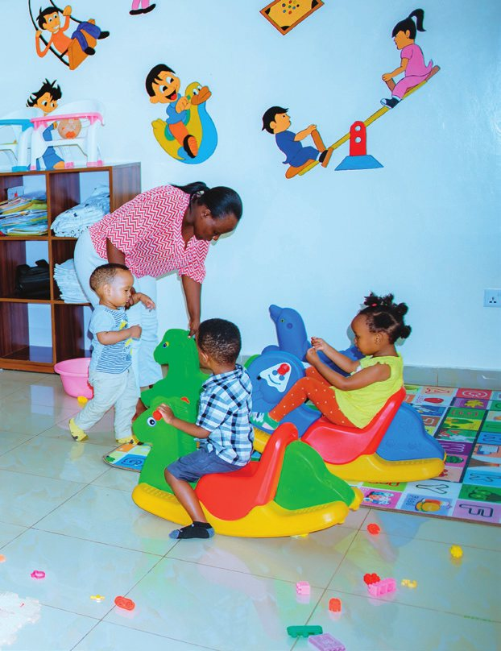
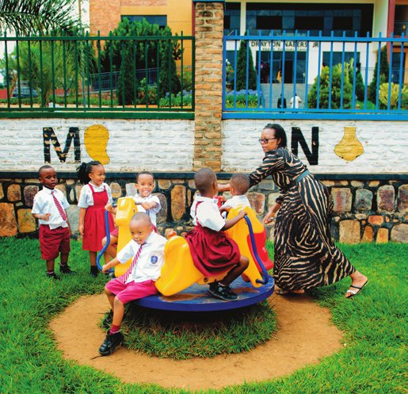
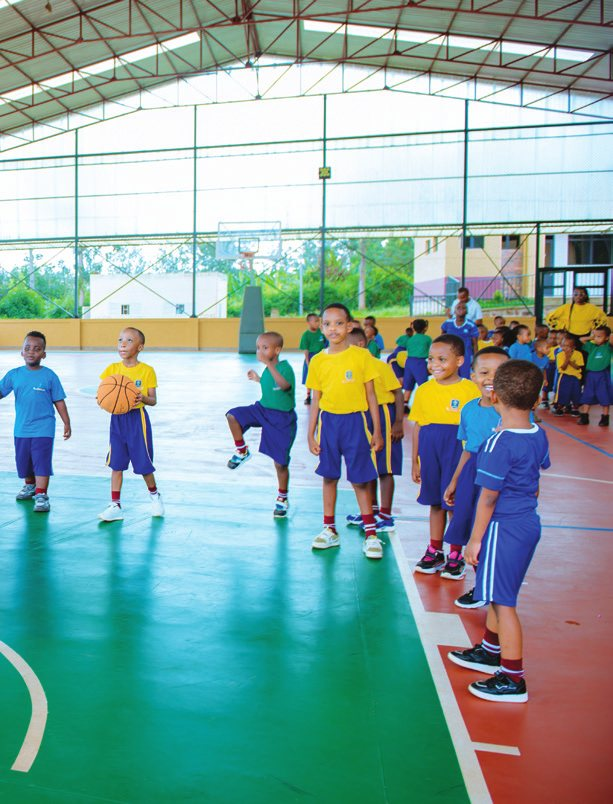
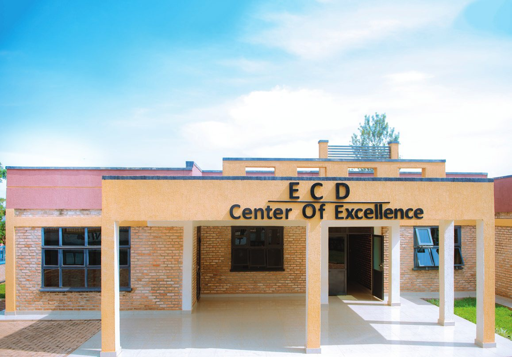

01
CrècheDaycare (Crèche)
Accueil des enfants à partir de 7 mois et au-delà.Welcoming children from 7 months and above.
« Notre école de la petite enfance a pour base principale le français. L'anglais est introduit dès la deuxième maternelle comme cours. »“Our early childhood school is primarily based on French. English is introduced as a subject starting from the second year of kindergarten.”
Être un centre d'excellence en éducation au développement de l'enfant.To be a center of excellence in child development education.
MissionMissionFournir une éducation de haute qualité pour la petite enfance dans un environnement centré sur le Christ, inclusif, respectueux et propice à l'apprentissage tout au long de la vie.To provide high quality early childhood education in a Christ-centered, inclusive, respectful environment that fosters lifelong learning.

Accueil des enfants à partir de 7 mois et au-delà.Welcoming children from 7 months and above.

Éveil, socialisation et apprentissage pré-scolaire.Early learning, socialization, and school readiness.

Formation académique solide et adaptée au développement global de l'enfant.Solid academic foundation adapted to the child's holistic development.
« Notre école de la petite enfance a pour base principale le français. L'anglais est introduit dès la deuxième maternelle comme cours. »“Our early childhood school is primarily based on French. English is introduced as a subject starting from the second year of kindergarten.”
Mise en valeur des talents, notamment en basket-ball.Nurturing talents, especially in basketball.
Organisation pendant les grandes vacances pour occuper les enfants de manière éducative et ludique, tout en développant leurs talents.Organized during long school breaks to keep children engaged in an educational and fun way, while developing their talents.


La crèche accueille les enfants à partir de 7 mois et au-delà. Contactez-nous au +250 788610220 pour toute demande d'inscription.The daycare welcomes children from 7 months and above. Call us on +250 788610220 for any enrollment inquiry.
Information permanenteStanding informationOrganisées pendant les grandes vacances pour occuper les enfants de manière éducative et ludique, tout en développant leurs talents.Organized during the long school breaks to keep children engaged in an educational and fun way, while developing their talents.
Information permanenteStanding informationMise en valeur des talents des enfants, notamment en basket-ball.Nurturing children's talents, especially in basketball.
Information permanenteStanding informationAucune annonce trouvée.No announcements found.
East African Christian College (EACC) est le collège chrétien de Kabuga, Kigali, dont l'écusson figure sur la brochure de notre centre.East African Christian College (EACC) is the Christ-centered college in Kabuga, Kigali, whose crest appears on our center's brochure.

Contactez-nous pour toute demande d'inscription ou de renseignements.Contact us for any enrollment inquiry or information request.